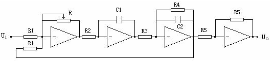
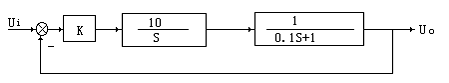
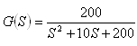
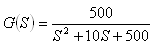

|
一、 实验目的 1． 掌握频率特性的测试原理及方法。 2． 学习根据所测定出的系统的频率特性，确定系统传递函数的方法。
1． 测定给定环节的频率特性。 2． 系统模拟电路图及系统结构图分别如图2-1及图2-2。  图2-1  图2-2 3． 系统传递函数为： 取R=200KΩ，则 取R=500KΩ，则 若正弦输入信号为Ui(t)=A1Sin(ωt),则当输出达到稳态时，其输出信号为Uo(t)=A2Sin(ωt+ψ)。改变输入信号频率 值，便可测得二组A1/A2和ψ随f(或ω)变化的数值，这个变化规律就是系统的幅频特性和相频特性。
|
||